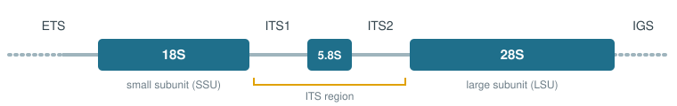

RiboPilot 

Please see the documentation website for more details.
RiboPilot is a product of the NMNH Ocean DNA initiative and does not represent an official Smithsonian Institution position or product.
RiboPilot assembles and annotates the nuclear ribosomal DNA repeat (rDNA) from genome skimming data, then helps you check and clean up the result and package it for submission to GenBank. If you already have an assembly, RiboPilot can start from that instead of reads. RiboPilot is a companion to MitoPilot, which does the same process for the mitochondrial genome. You can run both tools on the same samples and get both marker sets from one sequencing run.
Most of your work happens in a point-and-click Shiny app that runs in your web browser. The step-by-step Get started guide walks through a complete project from start to finish.
The nuclear ribosomal DNA unit
Every cell carries the ribosomal RNA genes in a repeated unit that is copied hundreds to thousands of times in a row. Because there are so many copies, even a shallow, inexpensive “genome skim” sequences this region very deeply. From it you get some widely used nuclear markers for phylogenetics and DNA barcoding: 18S, 28S, ITS1, ITS2, and the full ITS region.

The core rDNA unit is typically highly conserved, but with hundreds of copies arranged in a tandem repeat. The three ribosomal genes (18S, 5.8S, 28S) are highly conserved and act as anchors. The two spacers (ITS1, ITS2) sit between them, evolve quickly, and are the regions that distinguish closely related species.
Between the 28S of one copy and the 18S of the next lies the intergenic spacer (IGS): the 3’ external transcribed spacer (ETS), a non-transcribed spacer (NTS), and the 5’ ETS of the next copy (Hwang and Kim 1999).
However, the structure of the nuclear rDNA repeat varies across the tree of life. The IGS can range from a few hundred base pairs to tens of kilobases and often holds subrepeats. Repeat blocks of the rDNA unit can be located at one or several places in the genome. See Wang et al. 2023 for a review.
What RiboPilot does for you
The app walks each project through five steps, in order:
- Taxonomy. RiboPilot matches the
Taxonyou provide for each sample to the NCBI taxonomy. Samples must be reviewed and locked here before they move on to assembly, since the taxonomic ID of your samples guides scoring and curation. - Reference. RiboPilot groups related samples and builds a reference database of known rDNA sequences for each group, from GenBank.
- Assemble. One run cleans the reads, assembles the ribosomal repeat for each sample, picks the best assembly path, finds the five features (18S, ITS1, 5.8S, ITS2, 28S), and checks each result for problems such as a missing gene, an unusual length, a possible contaminant, or a chimera. You choose which contigs to keep or drop for the next step.
- Annotation Review. You check the annotated features and quality flags of each kept contig, adjusting boundaries if needed.
- Export. RiboPilot writes a tidy, GenBank-ready submission package, and warns you about any flagged record first.
Behind the scenes RiboPilot uses established bioinformatics tools (fastp, GetOrganelle, barrnap / pybarrnap, ITSx, BLAST, and others) and stitches them together for you. You do not need to learn or run any of them yourself. However, advanced users can adjust the parameters for each tool within RiboPilot.
Taxonomic Scope
Each group of samples needs a reference database of known rDNA sequences. You build it once per group in the app, from GenBank. See the reference database guide.
RiboPilot also runs automatic quality checks tuned for a taxonomic group. Five settings ship, picked from each sample’s lineage: a generic animal setting, and settings for ray-finned fishes, sea stars, true jellyfish, and octocorals; see the curation guide. These settings are still in development and likely need fine tuning.
Installation
RiboPilot requires Docker (or Singularity on a cluster), Java, Nextflow, and R. The Installation guide lists versions and checks. Then, in R:
install.packages("remotes")
remotes::install_github("NMNH-OceanDNA/RiboPilot")Getting started
The best way to learn RiboPilot is to run the built-in test project. The first command downloads the test samples and sets everything up; the second opens the app:
RiboPilot::new_test_project(path = "~/ribopilot_test")
RiboPilot::RiboPilot("~/ribopilot_test")By default this fetches small rDNA-filtered read subsets published with the RiboPilot releases, so setup takes under a minute. Pass full_size = TRUE to download the complete read sets from ENA/SRA instead (several GB). The first run also downloads the container image once (about 2.6 GB).
Follow the Get started guide to walk through project initialization and the five steps in the app.
Citing RiboPilot
Run citation("RiboPilot") in R.
Getting help
- Full documentation: https://nmnh-oceandna.github.io/RiboPilot/
- When something goes wrong: the Troubleshooting guide.
- Questions or problems: please open an issue.